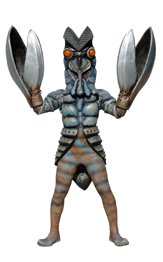
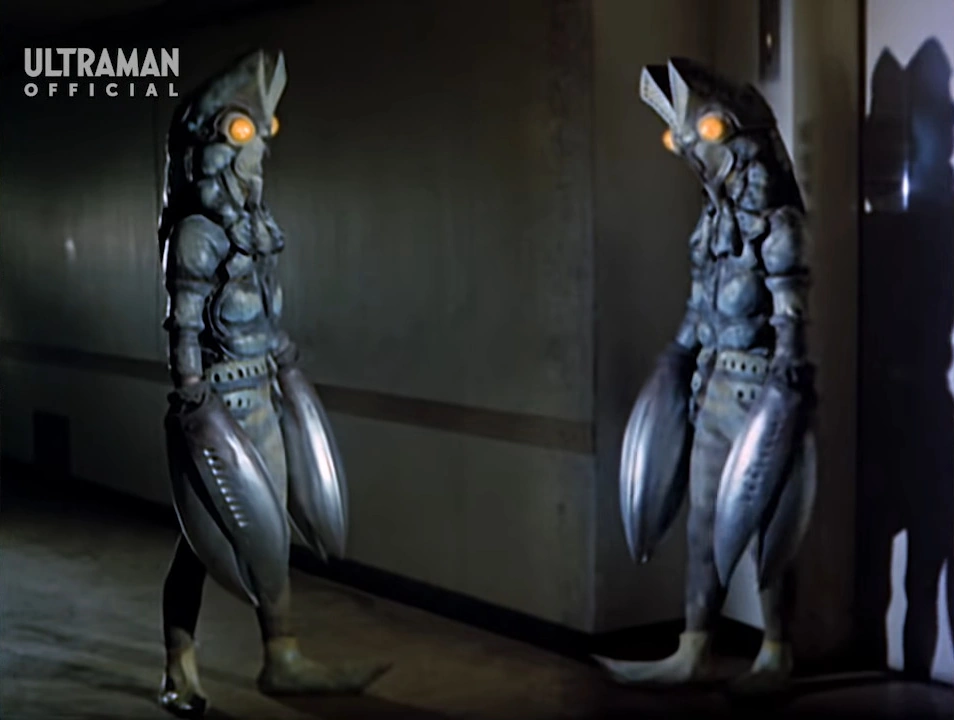
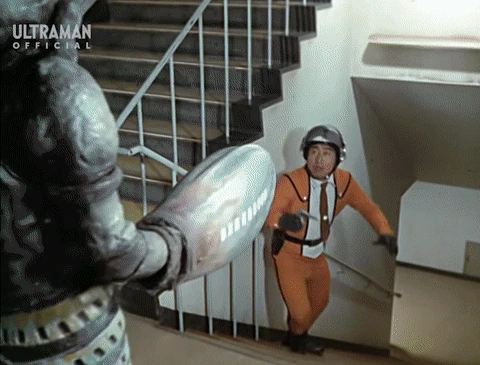

Información del Personaje
Origen:Planeta Baltan
Altura: 50 metros
Peso: 15,000 toneladas
Alianza: Enemigo ("Invasor")
Historia
Los Alien Baltan son una raza extraterrestre tecnológicamente avanzada con habilidades de clonación, teletransportación y manipulación de materia. A menudo han intentado invadir la Tierra utilizando tácticas de infiltración, ilusionismo y ataques psicológicos. Su apariencia insectoide, con garras gigantes y ojos compuestos, es fácilmente reconocible.
Originalmente, los Baltan fueron una civilización víctima de una catástrofe cósmica que destruyo su planeta de origen y estuvieron buscando un nuevo mundo al cual llamar hogar, pero sus repetidas acciones hostiles contra la Tierra (Llevando a la teoria de que los Baltan piensan que la Tierra es nuevo hogar ideal) los han convertido en una de las amenazas alienígenas más vigiladas por la WKDF. Han demostrado una gran capacidad de adaptación, reapareciendo en múltiples regiones y épocas con tácticas renovadas.
Incidentes Relevantes (Confirmados como parte de Iniciativa Ultra-Vigilancia)
Primera Invasión (1966, Japon): Un Baltan aparece como explorador, trayendo consigo 2.3 mil millones de copias clonadas. Destruyen una base y planean conquistar la Tierra, pero son derrotados por Ultraman con su Specium Ray.
Segunda Invasión (1967, Japon): Un nuevo grupo intenta vengarse de Ultraman, empleando ilusiones para confundir a la Patrulla Científica. Eliminados nuevamente por la fuerza de Ultraman.
Regreso Baltan (1972, Japon): Reaparecen con tecnología mejorada. Su plan de dominación incluye el uso de monstruos controlados. Son derrotados por Ultraman Jack.
Protocolo WKDF ante Presencia Baltan
1.Confinamiento electromagnético para evitar escape por teletransportación.
2.Uso de frecuencias sonoras disonantes para interferir en sus sistemas comunicativos.
3.Coordinación con grupos de defensa extraterrestres para rastrear y deshabilitar tecnología de camuflaje.
4.Activación del Protocolo Ultra-Vigilancia (Ultraman) en caso de amenaza nivel Omega.
Los Alien Baltan representan una amenaza constante y sofisticada para la estabilidad planetaria. Su dominio de la tecnología y sus motivos oscuros hacen que la WKDF los vigile como una de sus principales prioridades. Se mantiene abierta la colaboración con entidades de origen interestelar como Ultraman para garantizar la seguridad del planeta frente a futuros ataques o invasiones.
Imagen del Sujeto
Habilidades
White Destruction Beam
Baltan es capaz de liberar rayos de energía de sus pinzas que son capaces de destruir edificios con facilidad y explota en Contacto.
Ilusiones
Baltan es capaz de crear ilusiones creadas de luz que imita todos los pasos de el Baltan que lo creo al igual que puede usar el White Destruction Beam
Red Freezing Beam
Ataque de rayo de energía realizado desde sus pinzas. Utilizado para congelar a sus objetivos.
Videos de Metraje Encontrado
Video de Evidencia 1: Ultraman vs Alien Baltan 1
Video de Evidencia 2: Ultraman vs Baltan Jr.
Video de Evidencia 3: Baltan vs Kaiju local Woo
Video de Evidencia 4: Ultraman y Ultraman Seven vs Alien Baltan